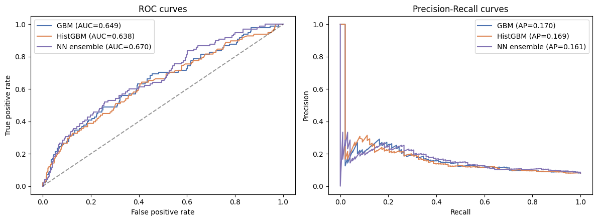
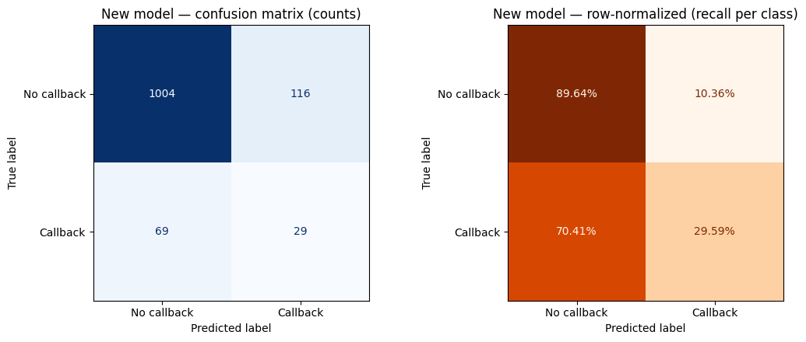
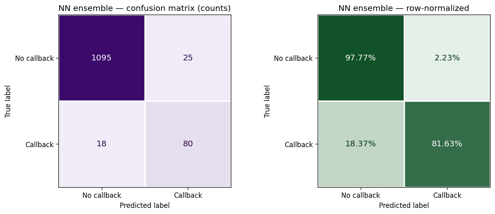

Humanities 11 · Research Paper
Racial Bias in AI Hiring Systems
Timbuktu Humanities 11
Ms. Rodriguez & Ms. Jacobs
Abstract
AI tools are now widely used to screen job applications: Wilson and Caliskan cite estimates that as many as 98.4% of Fortune 500 companies use AI in hiring, and in their own test of three AI models, White-associated names were preferred in 85.1% of cases. This paper examines the effects, causes, and possible solutions of racial bias in AI hiring systems. It argues that because these systems learn from biased human data, and because deleting race from an application cannot fully remove details that reveal race, they need regular audits for discriminatory outcomes rather than anonymization alone. A supplementary appendix reports a machine-learning analysis of the original Bertrand and Mullainathan audit data.
Keywords: algorithmic bias; AI hiring; employment discrimination; proxy variables; bias audits
1Introduction
Imagine it is 11:47 p.m., and Jamal is staring at his laptop screen, just 13 minutes before the final deadline of his dream job application. For weeks, Jamal has been adjusting his resume’s structure, adding bullet points, and fixing grammar mistakes to make sure everything is perfect for the hiring manager who will read it. Across town, Greg is going through the same process of revising drafts, checking requirements, and finding a way to fit his life’s accomplishments into a few pages. At 11:59, Jamal and Greg both submit their applications. In less than a second, an AI hiring system scans both resumes, sensing keywords and trends that reflect the data it was trained on, ranking Jamal’s resume below Greg’s. Three months later, Jamal receives a rejection letter while Greg receives a job offer, neither of them knowing that their decisions were made by a machine within seconds, long before a person could fully analyze their skills and hard-earned accomplishments.
This story might sound like something from a science fiction novel, but current evidence demonstrates that the issue of AI bias in hiring systems is a real and growing problem. In a 2025 Brookings article, Kyra Wilson and Aylin Caliskan cite recent estimates that “as many as 98.4% of Fortune 500 companies leverage AI in the hiring process.” In their own test of three AI models that matched resumes to job descriptions, “White-associated names were preferred in 85.1% of cases, while Black-associated names led in just 8.6%” (Wilson and Caliskan). Since AI hiring systems learn from biased human data and deleting race from an application cannot fully remove details that reveal race, these systems need regular audits for discriminatory outcomes rather than anonymization alone.
2Effects
Today, many companies are already facing lawsuits over AI hiring systems. Maryflelona Wagner describes Mobley v. Workday, a case in which a job applicant alleges that Workday’s AI screening software discriminated against him based on race, age, and disability (Wagner). If AI hiring systems do discriminate, the issue is not only a technological problem, but also an economic justice problem, as Black applicants lose chances to earn income, build stability, and improve their lives. Each missed opportunity can cost a person income, work experience, and a chance for future promotions. These losses can build up over time, increasing the racial wealth gap seen in America. According to Anshu Siripurapu from the Council on Foreign Relations, “income and wealth inequality is higher in the United States than in almost any other developed country… [with] large wealth and income gaps across racial groups” (Siripurapu), which means biased AI hiring systems risk widening gaps that already exist.
Median family wealth by race and ethnicity, 1989–2022
3Causes
3.1Bias in human hiring data
Some people might say that AI hiring systems are actually more fair than human managers because computers do not have feelings or emotions. However, this argument does not account for the fact that AI hiring systems are trained on data created by humans who have personal biases. In fact, the names Jamal and Greg in the introduction of this paper were not chosen by chance; they come from a well-known labor market study, “Are Emily and Greg More Employable Than Lakisha and Jamal?”, published in the American Economic Review. In this study, Marianne Bertrand and Sendhil Mullainathan answered real job ads with fictitious resumes and found that “white names [received] 50 percent more callbacks for interviews” (Bertrand and Mullainathan), providing evidence that discrimination against applicants based on their race existed well before AI hiring systems were introduced. This means that AI hiring systems are trained on human-made datasets that may already contain bias, causing the AI to learn and repeat the same unfair patterns. According to Siripurapu, “U.S. [wealth] inequality today is rooted in systemic racism and the legacy of slavery,” with Black Americans “[discriminated against] in the labor market” and “underrepresented in high-paying professions” (Siripurapu). As a result, historical data used to train AI models today can be biased against Black workers. If the dataset contains more examples of white applicants being selected in the past, an AI model would learn this pattern as a sign of success rather than a sign of discrimination and adapt it into its algorithm.
Callback rate by the race signaled by the applicant’s name
3.2The growth of AI in hiring
The problem is getting worse because of the recent growth of AI across the hiring industry. Wilson and Caliskan note that although AI use is lower among companies outside the Fortune 500, it was “expected to grow from 51% to 68% by the end of 2025” (Wilson and Caliskan). The more companies depend on AI tools to sort and rank applicants, the more people will be exposed to their biases. In addition to this, many applicants being evaluated by AI hiring systems may not know they are being judged by an AI, creating a lack of transparency that makes it difficult for applicants to recognize and challenge potential discrimination.
Estimated share of companies using AI in hiring
3.3Underrepresentation in training data
Another source of bias is the underrepresentation of minority groups in training datasets. AI hiring systems are a form of machine learning, which learns patterns and trends from a training dataset (Bergmann). These algorithms help sort and rank applications, but they can also repeat bias if the training data is unfair or incomplete. The FTC, DOJ, EEOC, and CFPB warn that automated systems’ results “can be skewed by unrepresentative or imbalanced datasets” (“Joint Statement”). As Emilio J. Castilla from MIT Sloan explains, “AI tools don’t operate in a vacuum. They learn from existing data — which can be incomplete, poorly coded, or shaped by decades of exclusion and inequality” (Castilla). Since these patterns are learned inside complex algorithms, the resulting bias can stay hidden from both employers and applicants.
Race and ethnicity of U.S. private-sector employees, 2022
4Solutions
4.1Removing race from applications
One possible solution is to remove references of race and ethnicity from applications before they reach AI systems. While this might seem to solve the issue because the AI cannot see a person’s racial identity, many machine learning algorithms, such as neural networks, k-nearest neighbors classifiers, and decision trees, can still predict an applicant’s race [1]. Wilson and Caliskan explain that removing “the most explicit references to race and gender” alone is “unlikely to prevent discriminatory outcomes,” because “information about protected class membership can also be inferred from content that correlates with particular social identities” (Wilson and Caliskan). The ability of AI models to predict an applicant’s race from other details, like school, writing style, or activities, demonstrates how this issue is more complex than removing one word from a resume.
Illustration: guessing race after the race field is deleted
Choose resume details, hide any you like, and run the prediction. The race field is never used.
4.2Mandatory bias audits
A stronger solution is to require regular audits of AI hiring systems to identify signs of bias before they are used in the real world. Wilson and Caliskan argue that “mandating regular auditing or reporting of models’ performance can help protect against discriminatory outcomes” (Wilson and Caliskan). As of 2025, they note, New York City and Colorado were “the only jurisdictions with a comprehensive law mandating auditing of AI hiring systems” (Wilson and Caliskan). According to the official New York City page, employers cannot use an automated employment decision tool unless it “has been subject to a bias audit within one year of the use of the tool” (“Automated Employment Decision Tools”). In addition, according to Colorado’s official bill summary, Colorado law required deployers of AI systems to complete “an impact assessment of the high-risk system” and to conduct annual reviews to make sure the system “is not causing algorithmic discrimination” (“SB24-205”). These auditing laws are meant to make bias easier to detect and harder to ignore. They also give companies a record of how their systems perform, shaping the company’s reputation and providing pressure to fix a biased system.
State laws on AI in hiring, 2020–2026
Select a state to see its law and source.
4.3Limits of audits
Auditing does, however, have its own limits. An audit cannot prove whether an entire hiring system is fair because its conclusions depend on what data, outputs, and groups it examines, as well as the reviewer’s ability to detect bias. Even New York City’s law “includes a disclosure exemption for firms that use AI systems alongside human decision-makers, leaving it up to the firms themselves to determine whether their systems qualify” (Wilson and Caliskan). Still, audits can expose unfair patterns that hiding personal information may miss. While anonymization removes certain details, an audit checks the system’s actual results to see whether some groups are being treated unfairly.
5Conclusion
The evidence conveys that AI hiring systems can disadvantage applicants from certain racial groups. These unfair patterns can come from historical discrimination in training data, underrepresentation, and proxy variables that are correlated with race, widening the wealth gap by keeping people of color from steady income and career growth. The idea of America as a land of opportunity comes from the belief that hard work and effort achieves success. However, America cannot live up to that idea if people of equal talent and qualifications are denied jobs because of their race. For America to become the “land of opportunity,” it first has to hold its technology accountable, auditing AI hiring systems for discriminatory outputs so everyone gets the same chance regardless of their race or ethnicity.
Notes
AAppendix: Supplementary Machine-Learning Investigation
This appendix describes work I completed in May 2026 alongside the paper and presented to my teachers separately. It was not part of the graded written paper. The neural-network results are being re-checked; see Section A.6.
A.1Purpose
To test the claims above, I trained three machine-learning models on the original Bertrand & Mullainathan audit dataset (4,870 applications, 63 variables) and measured how much an applicant’s perceived race influences callback predictions. The dataset comes from the same 2004 study that gave this paper the names Jamal and Greg, and the patterns it contains are the kind of historical data Castilla and the FTC warn modern AI systems learn from.
A.2Data
| Item | Description |
|---|---|
| Source | OpenIntro labor_market_discrimination (Bertrand and Mullainathan’s audit data) |
| Rows | 4,870 fictitious resumes sent to real Boston and Chicago employers |
| Features | 63 columns: education, years of experience, resume quality, ZIP-code demographics, employer size, industry, and perceived race |
| Target | Whether the employer called the applicant back |
| Class balance | About 8% of applications received a callback |
| Test set | 1,218 held-out applications |
A.3Models
- Gradient Boosted Trees (GBM): baseline model on all 63 columns.
- Histogram GBM: tuned with RandomizedSearchCV, calibrated probabilities, threshold optimized for F1.
- Neural network ensemble: PyTorch MLP trained with 5-fold cross-validation × 3 seeds (15 networks averaged), with mixup augmentation, label smoothing, and Stochastic Weight Averaging to prevent overfitting.
A.4Results
Table A2 reports each model’s performance on the held-out test set of 1,218 applications. Figure A1 shows the same numbers one metric at a time.
| Metric | GBM | HistGBM (tuned) | NN ensemble† |
|---|---|---|---|
| ROC-AUC | 0.649 | 0.638 | 0.912 |
| Average precision | 0.170 | 0.169 | 0.781 |
| F1 | 0.037 | 0.239 | 0.788 |
| Recall | 0.020 | 0.296 | 0.816 |
| Precision | 0.200 | 0.200 | 0.762 |
| Accuracy | 0.915 | 0.848 | 0.965 |
† Under re-check. Figure A3, from the same notebook, shows ROC-AUC 0.670 and average precision 0.161 for the ensemble. See Section A.6.



A.5What the results suggest
In the HistGBM model, an applicant’s perceived race was the 7th most important predictor of callbacks, ahead of employment gaps, employer size, and ZIP-code education levels.
Shuffling the race column alone lowers that model’s ROC-AUC by about 0.012, which means the model relies on race when it makes predictions.
This is consistent with what Castilla and the FTC describe: when a model is trained on real employer decisions, it learns to treat race as a useful signal, because AI “learn[s] from existing data — which can be incomplete, poorly coded, or shaped by decades of exclusion and inequality” (Castilla). My results reproduce that pattern on the original 2004 audit data.
A.6Limitations
- The neural-network results disagree with each other. Table A2 and Figure A5 imply ROC-AUC 0.912, recall 81.6%, and precision 76.2%, while the ROC curve in Figure A3 shows ROC-AUC 0.670 and average precision 0.161 for the same model. These cannot describe the same predictions on the same test set, so one of them comes from a different run. Until the notebook is re-run, the ensemble’s numbers should not be relied on.
- A leakage check is needed. The original study sent four resumes to each job ad, so a random train/test split can put resumes answered by the same employer in both sets. A split grouped by job ad would test whether a model learned employers’ habits rather than anything about the resumes.
- Which model the importances come from. Figure A2 comes from the HistGBM model, not the neural-network ensemble.
- What this dataset can and cannot show. In the original experiment, names were randomly assigned to resumes, so perceived race is independent of the other resume features. The data are good for measuring how employers responded to names, but they cannot show how proxies such as ZIP code stand in for race. Section 4.1 relies on Wilson and Caliskan for that argument.
- Scope. The data come from job ads in Boston and Chicago in 2001–2002, and the models are my reproductions, not a commercial hiring system.
Works Cited
- “Automated Employment Decision Tools (AEDT).” NYC Department of Consumer and Worker Protection, nyc.gov/site/dca/about/automated-employment-decision-tools.page. Accessed 16 May 2026.
- Bergmann, Dave. “What Is Machine Learning?” IBM, ibm.com/think/topics/machine-learning. Accessed 14 May 2026.
- Bertrand, Marianne, and Sendhil Mullainathan. “Are Emily and Greg More Employable Than Lakisha and Jamal? A Field Experiment on Labor Market Discrimination.” American Economic Review, vol. 94, no. 4, 2004, pp. 991–1013, doi.org/10.1257/0002828042002561.
- Castilla, Emilio J. “AI Is Reinventing Hiring—with the Same Old Biases. Here’s How to Avoid That Trap.” MIT Sloan School of Management, mitsloan.mit.edu/ideas-made-to-matter/ai-reinventing-hiring-same-old-biases-heres-how-to-avoid-trap. Accessed 14 May 2026.
- Hellman, Deborah. “Algorithmic Fairness.” Stanford Encyclopedia of Philosophy, 30 July 2025, plato.stanford.edu/entries/algorithmic-fairness/. Accessed 18 May 2026.
- “Joint Statement on Enforcement Efforts Against Discrimination and Bias in Automated Systems.” Federal Trade Commission, 2 May 2023, ftc.gov/system/files/ftc_gov/pdf/EEOC-CRT-FTC-CFPB-AI-Joint-Statement%28final%29.pdf. Accessed 14 May 2026.
- “SB24-205 Consumer Protections for Artificial Intelligence.” Colorado General Assembly, leg.colorado.gov/bills/sb24-205. Accessed 16 May 2026.
- Siripurapu, Anshu. “The U.S. Inequality Debate.” Council on Foreign Relations, 20 Apr. 2022, cfr.org/backgrounders/us-inequality-debate. Accessed 14 May 2026.
- Wagner, Maryflelona. “Mobley v. Workday and AI Discrimination.” Black Pre-Law Society, Columbia University, 6 Dec. 2025, blackprelaw.studentgroups.columbia.edu/news/mobley-v-workday-and-ai-discrimination. Accessed 14 May 2026.
- Wilson, Kyra, and Aylin Caliskan. “Gender, Race, and Intersectional Bias in AI Resume Screening via Language Model Retrieval.” Brookings Institution, 25 Apr. 2025, brookings.edu/articles/gender-race-and-intersectional-bias-in-ai-resume-screening-via-language-model-retrieval/. Accessed 14 May 2026.
Figure data sources
- Aladangady, Aditya, et al. “Changes in U.S. Family Finances from 2019 to 2022: Evidence from the Survey of Consumer Finances.” Federal Reserve Bulletin, Oct. 2023, www.federalreserve.gov/publications/files/scf23.pdf. (Figure 1)
- U.S. Equal Employment Opportunity Commission. 2022 EEO-1 aggregate data. (Figure 4)
- “SB26-189 Automated Decision-Making Technology.” Colorado General Assembly, leg.colorado.gov/bills/sb26-189. Accessed 28 Sept. 2026. (Figure 6)
- Other state law sources are linked in each state’s panel in Figure 6.
Citation and versions
Cite this paper (MLA):
Zhao, Leon. “Racial Bias in AI Hiring Systems.” Timbuktu Humanities 11 research paper, 17 May 2026, leonzhao.dev/ai/aihiring/.
- May 2026: original paper written for Humanities 11; machine-learning investigation presented separately.
- September 2026: paper revised; Figure 6 updated for Colorado’s SB26-189; Appendix A limitations added and the neural-network results marked for re-check.